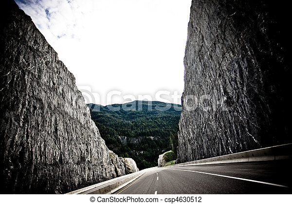
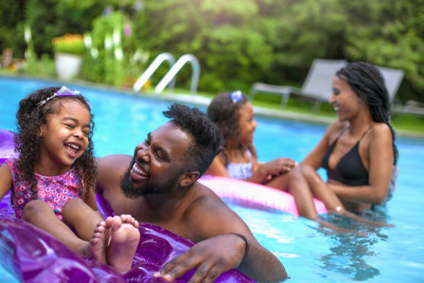
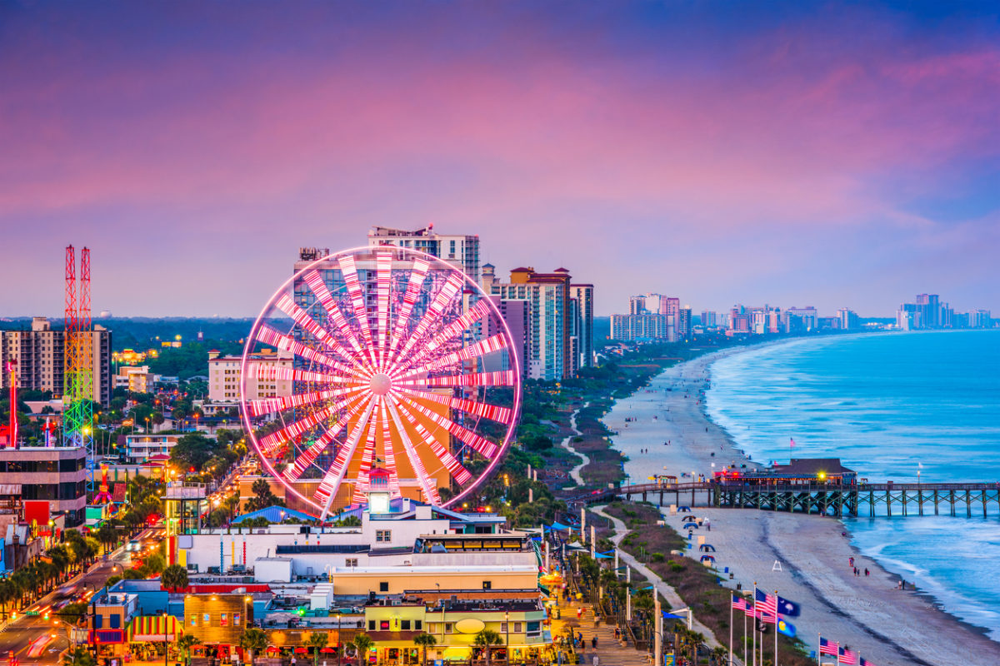
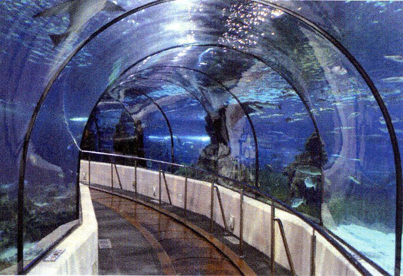

The Beginning 
Near the start of the summer of 2015, my Mom, Dad, and sister decided we should all take a trip to Georgia to visit family and have some fun. Soon we packed our bags and headed out. I remember the roads that were surrounded by large rocks, almost like walls. There were large, dense forests that kept going for as long as the eye could see. I even saw a few deer near the edge of the forest.
Georgia

Once we arrived, we stayed in a hotel for a few days before we went to my Grandma's house. Everyone was tired from the trip so we didn't do much for the first couple of days. Once we got our energy back, we headed off to explore what Georgia had to offer. We tried Zaxbys for the first time and it was amazing. It was so hot all the time so we bought swimwear and drove to the swimming pool. We eventually started going to the swimming pool almost every other day. I soon learned how to swim, and i got to the point where i could even swim in the 6 feet section! We spent most of our days at the swimming pool or riding around looking for cool places until my Mom got the idea to extend our vacation. My sister and I hadn't been to the ocean since we were little so my Mom decided we would visit Myrtle Beach before we headed back to the midwest!
*This is not my family.
Myrtle Beach, South Carolina
The final part of our trip was definitely my favorite. Even though i'm not much of a fan of large bodies of water, playing on the beach with my family was nice. The hotel we stayed at also had a big pool and a lazy river so we had a lot of fun there too. After the first day, we went to to all the tourist shops and got a feel for the night life and the culture. To end our adventure, we visited Ripley's Aquarium. It was my first time in an aquarium and I was in awe. I had never seen so many fish and sea creatures up close. I even got to touch a Jellyfish! All in all, this was an amazing adventure.